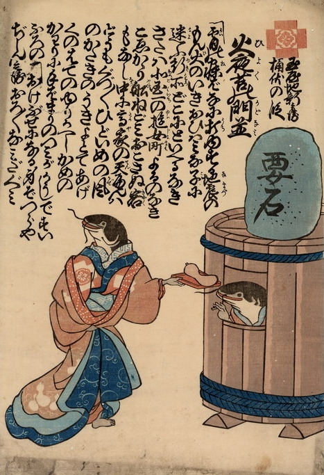

桶伏の刑を受けている鯰に、遊女姿の鯰が瓢箪を差し入れている。
出典：親書誌：U426_nichibunken_0213：玉屋地新兵衛桶伏の段火夜苦の門並；カドヤジシンベエオケブセノダンヒヨクノカドナミ／日付：2010／資源識別子：U426_nichibunken_0213_0001_0000
Copyright (c)2010- International Research Center for Japanese Studies, Kyoto, Japan. All rights reserved.